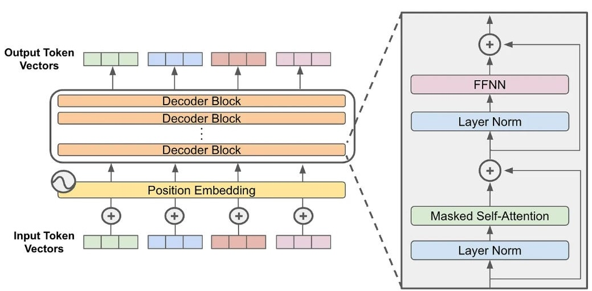

# CMSC 25700/35100: ## Natural Language Processing ## Lecture 7: Transformers <p style="text-align: center;"> <strong>Chenhao Tan</strong><br/> University of Chicago<br/> @ChenhaoTan, @chenhaotan.bsky.social<br/> chenhao@uchicago.edu </p> <a href="https://github.com/uchicago-nlp-course/winter-2025-students/issues/1">Submit Music Recommendations</a>, kudos to Mina Lee <br> <a href="https://github.com/uchicago-nlp-course/winter-2025-students/issues/2">Submit jokes</a> </p>
## Logistics * Shout out to Mike Chen! * A1 grades released * A3 is out
## Midterm Preparation I made a draft exam. I will test out with TAs first. Here is a non-spoiler study guide from Claude
## Concepts You Should Be Able to Explain - **Word representations**: Co-occurrence vectors, cosine similarity vs dot product, Word2Vec (skip-gram) - **Text classification**: Softmax, cross-entropy loss, Deep Averaging Networks - **Language models**: N-gram models, perplexity, RNN limitations - **Transformers**: Self-attention vs FFN, causal masking, encoder vs decoder - **Parameter counting**: How to count parameters in attention and FFN layers
## Math You Should Be Comfortable With - **Softmax**: $P(y=k) = \frac{\exp(z\_k)}{\sum\_j \exp(z\_j)}$ - **Cross-entropy loss**: $-\log P(\text{correct class})$ - **Dot products**: Computing $q^\top k$ for attention scores - **Matrix dimensions**: Shapes of $W\_Q$, $W\_K$, $W\_V$, $W\_O$, $W\_1$, $W\_2$ - **Perplexity**: $\text{PPL} = \exp\left(-\frac{1}{N}\sum \log P(w\_i)\right)$
## How to Prepare 1. **Review lecture slides**: Especially attention mechanism and transformer architecture 2. **Work through examples by hand**: Compute attention scores, softmax, parameter counts 3. **Understand the code**: Be able to identify bugs in code implementations 4. **Explain concepts out loud**: If you cannot explain it simply, you do not understand it
## Do Not Bother Memorizing - Exact formulas (they will be provided if needed) - Specific numbers from papers - Implementation details ## Do Understand - **Why** things work, not just **what** they are - Trade-offs between different approaches - How to debug model behavior
## Exam Format - One-page note (no electronic devices) - Mix of multiple choice and free response - Show your work for partial credit - Brief, clear answers (no rambling)
## Lecture Plan 1. Recap: Causal Self-Attention 2. What's Missing? 3. Positional Encodings 4. Feed-Forward Networks 5. Residual Connections and Layer Normalization 6. Walkthrough: Tracing Through a Transformer 7. The Complete Transformer Block
## Lecture Plan 1. **Recap: Causal Self-Attention** 2. <span style="opacity: 0.3;">What's Missing?</span> 3. <span style="opacity: 0.3;">Positional Encodings</span> 4. <span style="opacity: 0.3;">Feed-Forward Networks</span> 5. <span style="opacity: 0.3;">Residual Connections and Layer Normalization</span> 6. <span style="opacity: 0.3;">Walkthrough: Tracing Through a Transformer</span> 7. <span style="opacity: 0.3;">The Complete Transformer Block</span>
## Recall: Causal Self-Attention $$\text{Attention}(Q, K, V) = \text{softmax}\left(\frac{QK^T}{\sqrt{d\_k}} + M\right)V$$ where $M\_{ij} = \left\\{ \begin{array}{ll} 0 & j \leq i \\\ -\infty & j > i \end{array} \right.$ - Each position only attends to itself and previous positions - Enables autoregressive language modeling - Parallel training, sequential generation
## Multi-Head Causal Attention Multiple attention heads in parallel: $$\text{head}\_i = \text{Attention}(XW^Q\_i, XW^K\_i, XW^V\_i)$$ $$\text{MultiHead}(X) = \text{Concat}(\text{head}\_1, \ldots, \text{head}\_h)W^O$$ Each head can learn different attention patterns: - Syntactic relationships - Semantic relationships - Positional patterns
## Where We Are <div style="display: flex; align-items: center;"> <div style="flex: 1;"> We have causal self-attention: - Parallel computation - Direct access to all previous tokens - No recurrence **But is this enough to build a language model?** </div> <div style="flex: 1; text-align: center;"> <p></p> <p class="citation"><a href="https://cameronrwolfe.substack.com/p/decoder-only-transformers-the-workhorse">Decoder-Only Transformers</a></p> </div> </div>
## Lecture Plan 1. <span style="opacity: 0.3;">Recap: Causal Self-Attention</span> 2. **What's Missing?** 3. <span style="opacity: 0.3;">Positional Encodings</span> 4. <span style="opacity: 0.3;">Feed-Forward Networks</span> 5. <span style="opacity: 0.3;">Residual Connections and Layer Normalization</span> 6. <span style="opacity: 0.3;">Walkthrough: Tracing Through a Transformer</span> 7. <span style="opacity: 0.3;">The Complete Transformer Block</span>
## Discussion: What's Missing? We have multi-head causal attention. **Question: What problems remain if we only use attention?** Think about: - What information might be lost? - What computational properties might be missing? Discuss with your neighbor for 2 minutes.
## Problem 1: No Position Information Self-attention is **permutation equivariant**: $$\text{Attention}(\pi(X)) = \pi(\text{Attention}(X))$$ "The cat sat" and "sat cat The" produce the same attention patterns (just reordered)! **Word order matters in language!**
## Problem 2: No Non-Linearity Between Positions Attention is essentially a weighted sum: $$o\_t = \sum\_j \alpha\_{tj} v\_j$$ This is a **linear** operation on the values. Stacking multiple attention layers without non-linearity = still linear! **We need non-linear transformations to learn complex functions.**
## Problem 3: Training Deep Networks is Hard We want to stack many layers for capacity. Deep networks suffer from: - Vanishing/exploding gradients - Difficulty optimizing - Unstable training **We need mechanisms to stabilize deep network training.**
## The Solutions | Problem | Solution | |---------|----------| | No position info | Positional encodings | | No non-linearity | Feed-forward networks | | Training instability | Residual connections + Layer norm | Let's examine each solution.
## Lecture Plan 1. <span style="opacity: 0.3;">Recap: Causal Self-Attention</span> 2. <span style="opacity: 0.3;">What's Missing?</span> 3. **Positional Encodings** 4. <span style="opacity: 0.3;">Feed-Forward Networks</span> 5. <span style="opacity: 0.3;">Residual Connections and Layer Normalization</span> 6. <span style="opacity: 0.3;">Walkthrough: Tracing Through a Transformer</span> 7. <span style="opacity: 0.3;">The Complete Transformer Block</span>
## Positional Encodings Add position information to input embeddings: $$x\_t = \text{embed}(w\_t) + \text{PE}(t)$$ The model can now distinguish positions! Two main approaches: - Sinusoidal (fixed) - Learned embeddings
## Sinusoidal Positional Encodings Original Transformer uses fixed sinusoidal functions: $$\text{PE}(t, 2i) = \sin\left(\frac{t}{10000^{2i/d}}\right)$$ $$\text{PE}(t, 2i+1) = \cos\left(\frac{t}{10000^{2i/d}}\right)$$ - Different frequencies for different dimensions - Can potentially generalize to longer sequences - No learned parameters <p class="citation">Vaswani et al. (2017)</p>
## Learned Positional Embeddings Modern approach: Learn a position embedding matrix $$P \in \mathbb{R}^{L\_{max} \times d}$$ where $L\_{max}$ is maximum sequence length. $$x\_t = \text{embed}(w\_t) + P[t]$$ - More flexible - Used in GPT, BERT, and most modern models - Requires fixed maximum length
## Rotary Position Embeddings (RoPE) Modern alternative: Encode position in the attention computation Key idea: Rotate query and key vectors based on position We will explain this in more detail if we have time, but you can read about it here: <p class="citation"><a href="https://arxiv.org/abs/2104.09864">RoFormer: Enhanced Transformer with Rotary Position Embedding</a> by Su et al. (2021)</p>
## Lecture Plan 1. <span style="opacity: 0.3;">Recap: Causal Self-Attention</span> 2. <span style="opacity: 0.3;">What's Missing?</span> 3. <span style="opacity: 0.3;">Positional Encodings</span> 4. **Feed-Forward Networks** 5. <span style="opacity: 0.3;">Residual Connections and Layer Normalization</span> 6. <span style="opacity: 0.3;">Walkthrough: Tracing Through a Transformer</span> 7. <span style="opacity: 0.3;">The Complete Transformer Block</span>
## Feed-Forward Network (FFN) Applied independently to each position: $$\text{FFN}(x) = W\_2 \cdot g(W\_1 x + b\_1) + b\_2$$ where $g$ is a non-linear activation (ReLU, GELU, SwiGLU) - Input/output dimension: $d\_{model}$ - Inner dimension: $d\_{ff}$ (typically $4 \times d\_{model}$)
## FFN: The Details Typical dimensions: - $d\_{model} = 768$ (hidden size) - $d\_{ff} = 3072$ (4x expansion) Parameters: - $W\_1 \in \mathbb{R}^{d\_{ff} \times d\_{model}}$ - $W\_2 \in \mathbb{R}^{d\_{model} \times d\_{ff}}$ Parameter count: $2 \times d\_{model} \times d\_{ff}$ **Often the majority of parameters in a Transformer!**
## Why FFN Matters The FFN provides: 1. **Non-linearity**: Essential for learning complex functions 2. **Per-position processing**: Each token gets transformed independently 3. **Capacity**: The expanded inner dimension provides more expressivity Think of it as: Attention = communication, FFN = computation
## Activation Functions **ReLU** (original): $g(x) = \max(0, x)$ **GELU** (GPT, BERT): $g(x) = x \cdot \Phi(x)$ - Smoother than ReLU **SwiGLU** (LLaMA, modern): $$\text{FFN}(x) = (\text{Swish}(xW\_{\text{gate}}) \odot xW\_{\text{up}}) W\_{\text{down}}$$ - Gated variant, better performance - 3 matrices: $W\_{\text{gate}}$, $W\_{\text{up}}$, $W\_{\text{down}}$ <p class="citation">Shazeer (2020)</p>
## Lecture Plan 1. <span style="opacity: 0.3;">Recap: Causal Self-Attention</span> 2. <span style="opacity: 0.3;">What's Missing?</span> 3. <span style="opacity: 0.3;">Positional Encodings</span> 4. <span style="opacity: 0.3;">Feed-Forward Networks</span> 5. **Residual Connections and Layer Normalization** 6. <span style="opacity: 0.3;">Walkthrough: Tracing Through a Transformer</span> 7. <span style="opacity: 0.3;">The Complete Transformer Block</span>
## Residual Connections Skip connections around each sublayer: $$y = f(x) + x$$ Instead of $y = f(x)$, the layer learns $f(x) = y - x$ Benefits: - Easier gradient flow (gradients can skip layers) - Can learn identity if layer is not helpful - Enables training very deep networks <p class="citation">He et al. (2016)</p>
## Layer Normalization Normalize activations across the feature dimension: $$\text{LayerNorm}(x) = \gamma \odot \frac{x - \mu}{\sigma + \epsilon} + \beta$$ - $\mu, \sigma$: mean and std computed per position, across features - $\gamma, \beta$: learned scale and shift parameters - $\epsilon$: small constant for numerical stability Stabilizes training by controlling activation magnitudes.
## RMSNorm: A Simplification Root Mean Square Layer Normalization: $$\text{RMSNorm}(x) = \gamma \odot \frac{x}{\sqrt{\frac{1}{d}\sum\_i x\_i^2 + \epsilon}}$$ - Removes the mean centering step - Slightly faster, similar performance - Used in LLaMA, Mistral, and modern models <p class="citation">Zhang & Sennrich (2019)</p>
## Lecture Plan 1. <span style="opacity: 0.3;">Recap: Causal Self-Attention</span> 2. <span style="opacity: 0.3;">What's Missing?</span> 3. <span style="opacity: 0.3;">Positional Encodings</span> 4. <span style="opacity: 0.3;">Feed-Forward Networks</span> 5. <span style="opacity: 0.3;">Residual Connections and Layer Normalization</span> 6. **Walkthrough: Tracing Through a Transformer** 7. <span style="opacity: 0.3;">The Complete Transformer Block</span>
## The Residual Stream The **residual stream** is what gets operated on as we process a sequence. It starts with token + position embeddings (added once): $$\mathbf{x}^{(0)} = \text{embed}(x) + \text{pos}$$ Each layer updates the residual stream in two steps: $$\mathbf{h}^{(\ell)} = \mathbf{x}^{(\ell-1)} + \text{Attn}\_\ell(\mathbf{x}^{(\ell-1)})$$ $$\mathbf{x}^{(\ell)} = \mathbf{h}^{(\ell)} + \text{FFN}\_\ell(\mathbf{h}^{(\ell)})$$
## The Residual Stream
## Our Running Example We'll trace the sentence: "The movie ended" Following position 1 (token "movie") through a 1-layer transformer. (Positions are 0-indexed: "The"=0, "movie"=1, "ended"=2) We'll see exactly what changes at each step.
## Step 1: Entering the Residual Stream Token embedding + position encoding: $$\mathbf{x}\_1^{(0)} = \mathbf{e}\_{\text{movie}} + \mathbf{p}\_1$$ - $\mathbf{e}\_{\text{movie}}$: Token embedding for "movie" (looked up from $W\_E$) - $\mathbf{p}\_1$: Position encoding for position 1 The residual stream at layer 0: $$[\mathbf{x}\_0^{(0)}, \mathbf{x}\_1^{(0)}, \mathbf{x}\_2^{(0)}]$$
## Step 2: LayerNorm + Attention First, normalize the residual stream: $$\tilde{\mathbf{x}}\_1^{(0)} = \text{LayerNorm}(\mathbf{x}\_1^{(0)})$$ Then compute attention (with causal mask): $$\text{Attn}(\tilde{\mathbf{x}}\_1^{(0)}) = \sum\_{j \leq 1} \alpha\_{1j} \cdot \mathbf{v}\_j$$ Position 1 can only attend to positions 0 and 1 (not 2)!
## Concrete Attention Example For "The movie ended" at position 1 ("movie"): | Position | Token | Attention Weight | |----------|-------|-----------------| | 0 | The | 0.4 | | 1 | movie | 0.6 | | 2 | ended | 0.0 (masked) | $$\text{Attn}\_1(\cdot) = 0.4 \cdot \mathbf{v}\_{\text{The}} + 0.6 \cdot \mathbf{v}\_{\text{movie}}$$
## Adding Attention to Residual After attention, update the residual stream: $$\mathbf{x}\_1^{\text{(attn)}} = \mathbf{x}\_1^{(0)} + \text{Attn}(\text{LN}(\mathbf{x}\_1^{(0)}))$$ Position 1 now contains: - Original "movie" embedding - Position information - **Context from attention** (weighted sum of "The" and "movie")
## Step 3: LayerNorm + FFN Normalize again before FFN: $$\tilde{\mathbf{x}}\_1^{\text{(attn)}} = \text{LayerNorm}(\mathbf{x}\_1^{\text{(attn)}})$$ Apply feedforward network: $$\text{FFN}(\tilde{\mathbf{x}}) = W\_2 \cdot g(W\_1 \tilde{\mathbf{x}} + b\_1) + b\_2$$ FFN operates **independently** at each position (no cross-position interaction).
## What Does FFN Do? FFN can detect patterns and transform representations: - "movie" is a **NOUN** - "movie" appears after "The" (determiner-noun pattern) - "movie" relates to entertainment Think of FFN as: Attention = communication, FFN = computation.
## After One Layer The residual stream at position 1 now contains: $$\mathbf{x}\_1^{(1)} = \mathbf{x}\_1^{(0)} + \text{Attn}(\text{LN}(\mathbf{x}\_1^{(0)})) + \text{FFN}(\text{LN}(\mathbf{x}\_1^{\text{(attn)}}))$$ Components accumulated: - Original embedding: $\mathbf{e}\_{\text{movie}}$ - Position: $\mathbf{p}\_1$ - Context from attention - Patterns from FFN
## Step 4: Unembedding Convert the final hidden state to vocabulary scores: $$\mathbf{z}\_1 = W\_U \cdot \text{LN}(\mathbf{x}\_1^{(L)})$$ - $W\_U \in \mathbb{R}^{|V| \times d}$: Unembedding matrix - Output: **Logits** $\mathbf{z}\_1 \in \mathbb{R}^{|V|}$ (one score per vocab token) Logits are raw, unnormalized scores.
## Step 5: Softmax Convert logits to probabilities: $$P(x\_{\text{next}} | \text{The movie}) = \text{softmax}(\mathbf{z}\_1)$$ $$P(x\_i) = \frac{e^{z\_i}}{\sum\_{j=1}^{|V|} e^{z\_j}}$$ Top predictions for "The movie ___": - "was" → 0.18 - "is" → 0.15 - "ended" → 0.12
## Parameters vs. Activations **Parameters** (fixed during inference): - Weight matrices: $W\_E$, $W\_Q$, $W\_K$, $W\_V$, $W\_O$, $W\_1$, $W\_2$, $W\_U$, ... - Learned during training, shared across all sequences **Activations** (computed per sequence): - Vectors in the residual stream: $\mathbf{x}\_i^{(\ell)}$ - Different for each input sequence - What actually gets modified as we process
## The Complete Forward Pass ```python x = token_embed[input_ids] + position_embed # Embed for layer in transformer_layers: # Each layer x = x + layer.attn(layer.ln_1(x)) # Attention x = x + layer.ffn(layer.ln_2(x)) # FFN x = final_ln(x) # Final norm logits = x @ W_U.T # Unembed probs = softmax(logits) # Probabilities ``` `@` is matrix multiplication (broadcasts over batch dimensions)
## Key Insight: Additive Structure The residual stream accumulates information: $$\mathbf{x}^{(L)} = \mathbf{e} + \mathbf{p} + \sum\_{\ell} [\text{Attn}\_\ell + \text{FFN}\_\ell]$$ - Nothing is "erased" - information accumulates - Each layer adds a "delta" to the stream - This is why we call it the **residual** stream The embedding matrices ($W\_E$, $W\_U$) are never modified during inference!
## Lecture Plan 1. <span style="opacity: 0.3;">Recap: Causal Self-Attention</span> 2. <span style="opacity: 0.3;">What's Missing?</span> 3. <span style="opacity: 0.3;">Positional Encodings</span> 4. <span style="opacity: 0.3;">Feed-Forward Networks</span> 5. <span style="opacity: 0.3;">Residual Connections and Layer Normalization</span> 6. <span style="opacity: 0.3;">Walkthrough: Tracing Through a Transformer</span> 7. **The Complete Transformer Block**
## Putting It Together: Transformer Block Each block contains two sublayers with residuals: ``` x → LayerNorm → MultiHeadAttn → + → LayerNorm → FFN → + → output └──────────────────────────┘ └──────────────────┘ residual residual ``` $$h = x + \text{MHA}(\text{LN}(x))$$ $$\text{output} = h + \text{FFN}(\text{LN}(h))$$ This is "Pre-Norm" (normalize before sublayer).
## Pre-Norm vs Post-Norm **Post-Norm** (original Transformer): $$h = \text{LN}(x + \text{MHA}(x))$$ **Pre-Norm** (modern, more stable): $$h = x + \text{MHA}(\text{LN}(x))$$ Pre-Norm advantages: - More stable gradients - Easier to train deep models - Now the default in practice
## The Full Decoder-Only Transformer Stack $N$ identical blocks: 1. **Input**: Token embeddings + positional encodings 2. **Block 1**: MHA + FFN (with residuals and norms) 3. **Block 2**: MHA + FFN 4. ... 5. **Block N**: MHA + FFN 6. **Output**: Final LayerNorm → Linear → Softmax All attention is **causal** (masked).
## Decoder-Only Architecture <div style="display: flex; align-items: center;"> <div style="flex: 1;"> Used in: GPT, LLaMA, Mistral, Claude Key properties: - Causal masking in all layers - Autoregressive generation - Same architecture for training and inference Modern LLMs are decoder-only! </div> <div style="flex: 1; text-align: center;"> </div> </div>
## GPT-2 in PyTorch Terms ```python # GPT-2 Small configuration config = GPT2Config( vocab_size=50257, # Vocabulary size n_positions=1024, # Max sequence length n_embd=768, # d_model n_layer=12, # Number of blocks n_head=12, # Attention heads n_inner=3072, # FFN inner dim (4x) ) ``` See notebook: `gpt2_architecture.ipynb`
## GPT-2 Architecture Overview ``` Input IDs | Token Embed (50257 x 768) + Position Embed (1024 x 768) | [Transformer Block x 12] | Final LayerNorm | LM Head (768 -> 50257) [weight tied with Token Embed] | Logits ```
## Inside One Transformer Block ```python class GPT2Block: ln_1: LayerNorm(768) # Pre-norm attn: GPT2Attention # Causal MHA c_attn: Linear(768, 2304) # QKV combined c_proj: Linear(768, 768) # Output proj ln_2: LayerNorm(768) # Pre-norm mlp: GPT2MLP c_fc: Linear(768, 3072) # Expansion c_proj: Linear(3072, 768) # Projection ``` Note: 2304 = 3 $\times$ 768 (Q, K, V concatenated)
## Attention Parameters **Combined QKV Projection**: - Weight: $d \times 3d = 768 \times 2304$ - Bias: $3d = 2304$ **Output Projection**: - Weight: $d \times d = 768 \times 768$ - Bias: $d = 768$ **Total attention (with bias)**: $$d \cdot 3d + 3d + d \cdot d + d = 4d^2 + 4d$$ $$= 4 \times 768^2 + 4 \times 768 = 2,362,368$$
## FFN Parameters **Expansion Layer** ($d \to d\_{ff}$): - Weight: $d \times d\_{ff} = 768 \times 3072$ - Bias: $d\_{ff} = 3072$ **Projection Layer** ($d\_{ff} \to d$): - Weight: $d\_{ff} \times d = 3072 \times 768$ - Bias: $d = 768$ **Total FFN (with bias)**: $$2 \cdot d \cdot d\_{ff} + d\_{ff} + d = 4,722,432$$
## Discussion: Parameter Count Setup (GPT-2 small): - $N = 12$ layers - $d\_{model} = 768$ - $h = 12$ heads, $d\_k = d\_v = 64$ - $d\_{ff} = 3072$ **Question: What is the total parameter count?** Components to count: - Embeddings (token + position) - Per block (attention + FFN + layer norms) - Final layer norm
## Parameter Count: Embeddings **Token Embeddings**: vocab_size $\times$ d $$50257 \times 768 = 38,597,376$$ **Position Embeddings**: max_len $\times$ d $$1024 \times 768 = 786,432$$ **Total Embeddings**: 39,383,808
## Parameter Count: Per Block | Component | Formula | Count | |-----------|---------|-------| | LayerNorm 1 | $2d$ (weight + bias) | 1,536 | | Attention | $4d^2 + 4d$ | 2,362,368 | | LayerNorm 2 | $2d$ | 1,536 | | FFN | $2 \cdot d \cdot d\_{ff} + d\_{ff} + d$ | 4,722,432 | | **Block Total** | | **7,087,872** | 12 blocks: $12 \times 7,087,872 = 85,054,464$
## Parameter Count: Total | Component | Parameters | |-----------|------------| | Token Embeddings | 38,597,376 | | Position Embeddings | 786,432 | | 12 Transformer Blocks | 85,054,464 | | Final LayerNorm | 1,536 | | LM Head | 0 (tied) | | **Total** | **124,439,808** | Weight tying: LM head shares weights with token embeddings!
## Where Do Parameters Live? For GPT-2 Small (124M): - **Embeddings**: 39M (31%) - **Attention** (all layers): 28M (23%) - **FFN** (all layers): 57M (46%) Key insight: **FFN has the most parameters!** As models scale, attention becomes relatively smaller.
## Scaling Transformers | Model | Layers | $d\_{model}$ | Heads | Params | |-------|--------|-------------|-------|--------| | GPT-2 Small | 12 | 768 | 12 | 124M | | GPT-2 Medium | 24 | 1024 | 16 | 355M | | GPT-2 Large | 36 | 1280 | 20 | 774M | | GPT-2 XL | 48 | 1600 | 25 | 1.5B | | GPT-3 | 96 | 12288 | 96 | 175B | Scaling: more layers, wider dimensions, more heads
## Scaling Laws Parameters scale roughly as: $$P \approx 12 \cdot N \cdot d^2$$ where $N$ = layers, $d$ = model dimension (Assumes $d\_{ff} = 4d$ and ignoring embeddings) Doubling $d$ quadruples parameters!
## Key Takeaways 1. **Attention alone is not enough**: Need position, non-linearity, stability 2. **Positional encodings**: Learned or RoPE in modern models 3. **FFN**: Often more parameters than attention 4. **Pre-Norm + Residuals**: Standard for training stability 5. **Residual stream**: Information accumulates additively through layers
## Notation Summary: Dimensions | Symbol | Meaning | Example | |--------|---------|---------| | $d$ or $d\_{model}$ | Model/hidden dimension | 768 | | $d\_k$, $d\_v$ | Key/value dimension per head | 64 | | $d\_{ff}$ | FFN inner dimension | 3072 | | $h$ | Number of attention heads | 12 | | $N$ or $L$ | Number of layers | 12 | | $\|V\|$ | Vocabulary size | 50257 | | $L\_{max}$ | Maximum sequence length | 1024 |
## Notation Summary: Weight Matrices | Symbol | Shape | Purpose | |--------|-------|---------| | $W\_Q$, $W\_K$, $W\_V$ | $d \times d\_k$ | Query/Key/Value projections | | $W\_O$ | $hd\_v \times d$ | Output projection | | $W\_1$ | $d\_{ff} \times d$ | FFN expansion | | $W\_2$ | $d \times d\_{ff}$ | FFN projection | | $W\_E$ | $\|V\| \times d$ | Token embeddings | | $W\_U$ | $\|V\| \times d$ | Unembedding (often tied to $W\_E$) | | $P$ | $L\_{max} \times d$ | Position embeddings |
## Notation Summary: Activations | Symbol | Meaning | |--------|---------| | $\mathbf{x}^{(\ell)}$ | Residual stream at layer $\ell$ | | $\mathbf{h}^{(\ell)}$ | Intermediate state (after attention) | | $\mathbf{e}$ | Token embedding vector | | $\mathbf{p}$ | Position encoding vector | | $q$, $k$, $v$ | Query, key, value vectors | | $\alpha\_{ij}$ | Attention weight from position $i$ to $j$ | | $\mathbf{z}$ | Logits (pre-softmax scores) |
## Notation Summary: Functions | Symbol | Meaning | |--------|---------| | $\text{LN}(\cdot)$ | Layer Normalization | | $\text{MHA}(\cdot)$ | Multi-Head Attention | | $\text{FFN}(\cdot)$ | Feed-Forward Network | | $\text{PE}(t)$ | Positional Encoding at position $t$ | | $\text{softmax}(\cdot)$ | Softmax function | | $g(\cdot)$ | Activation function (ReLU, GELU, etc.) |
# Questions?